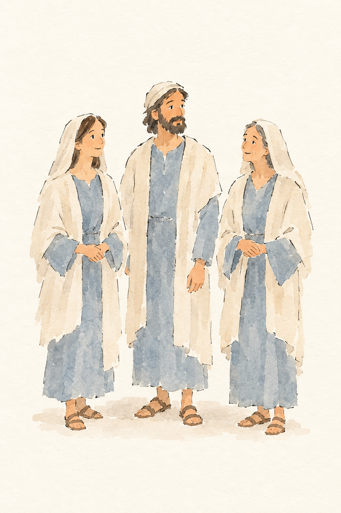
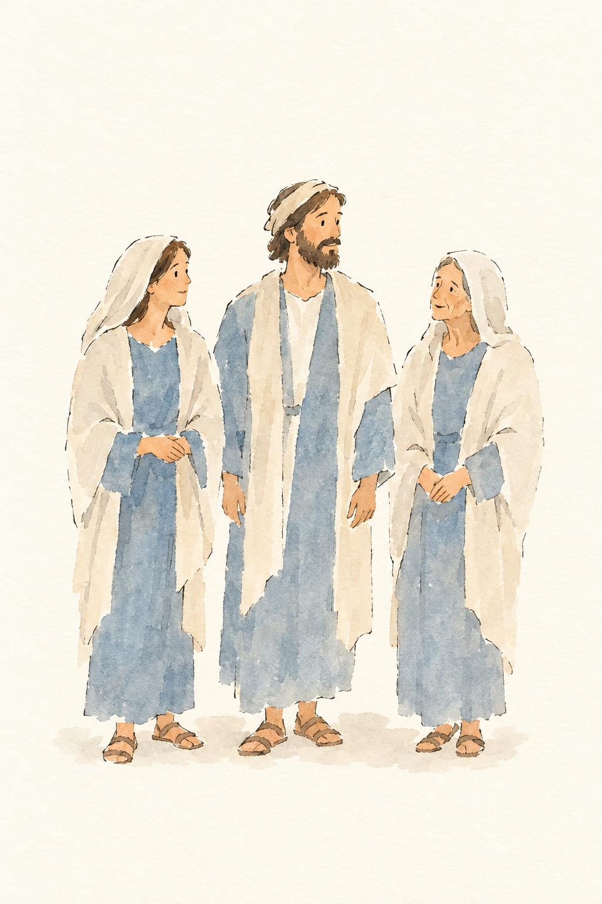
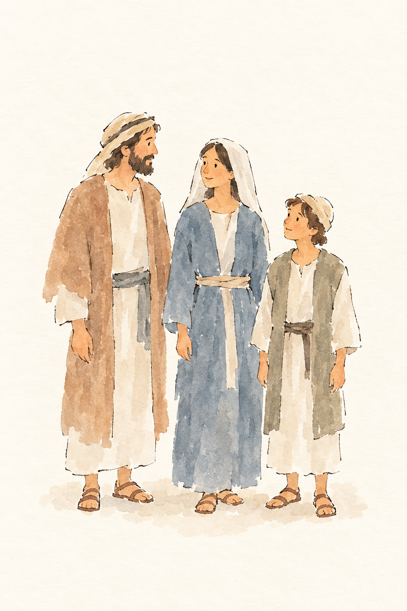
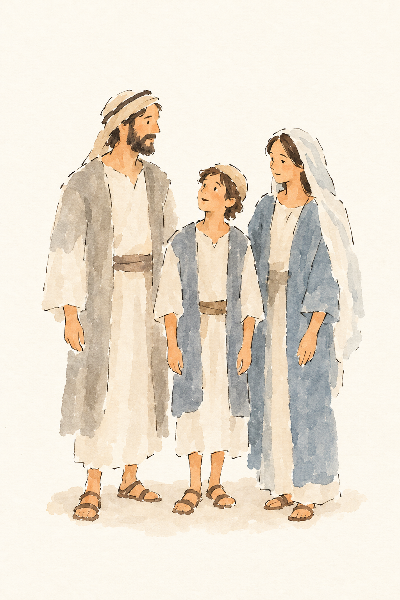
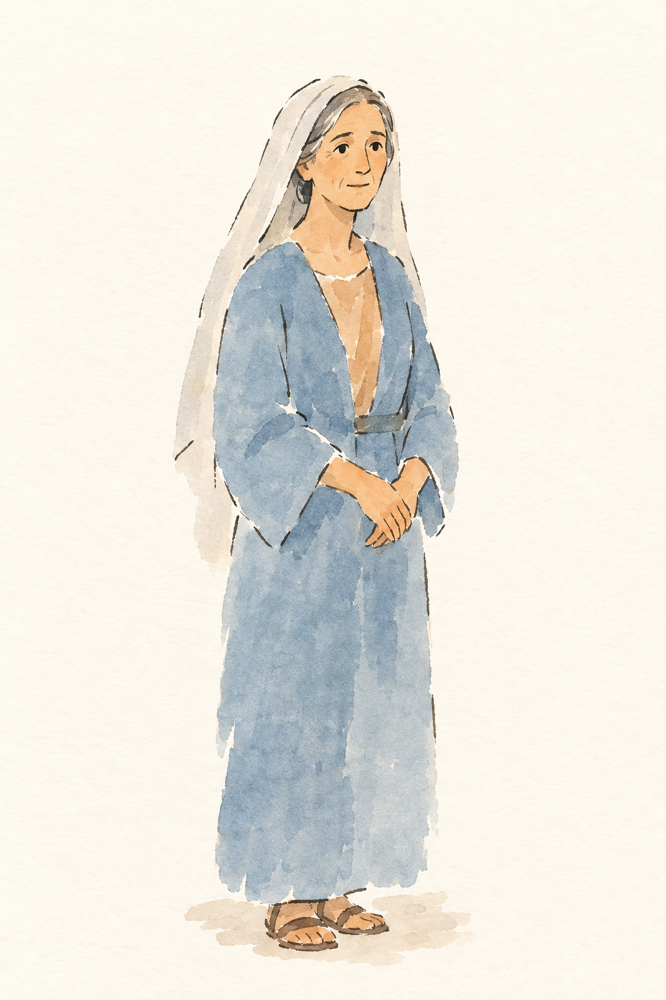
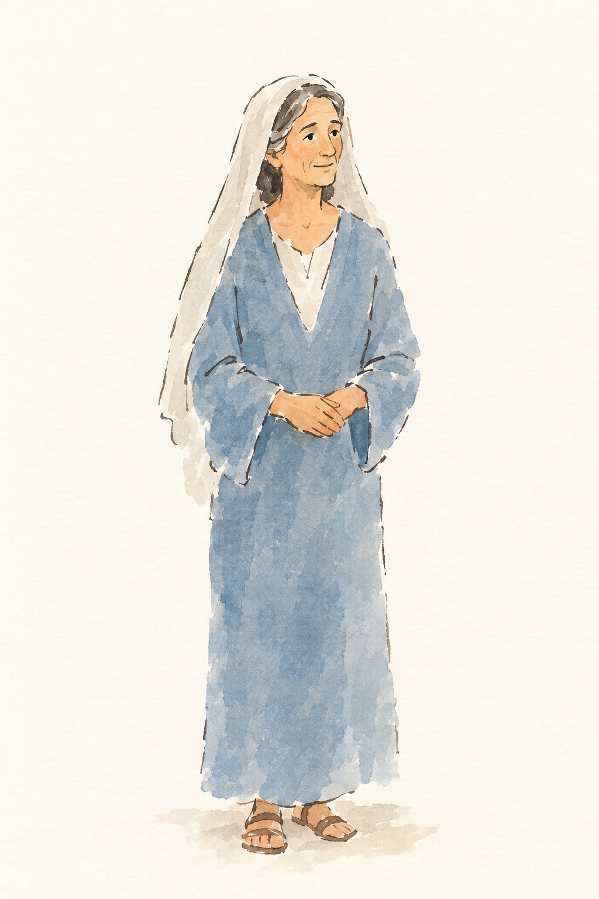
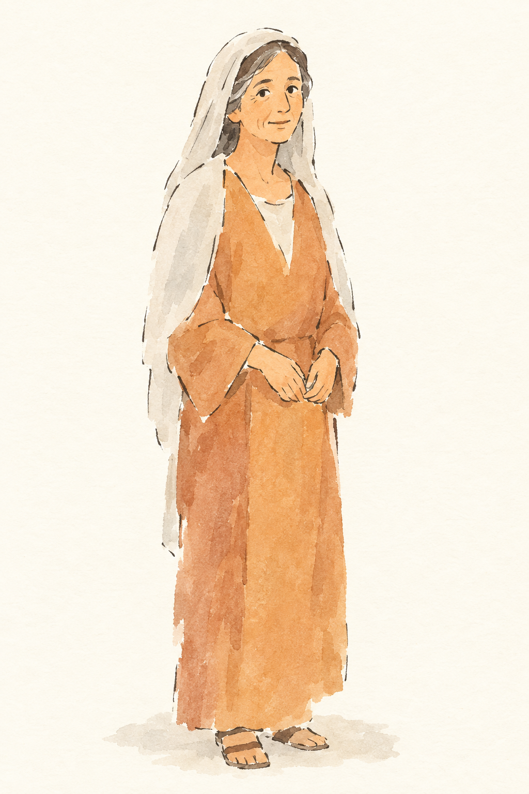
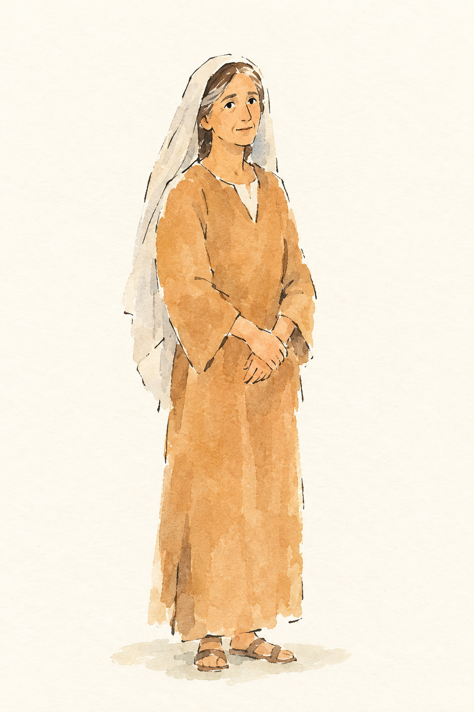

FIG-GRUPPE-GLAUBENDE__r1v1.png ✔ gewählt: bestanden, 5 Punkte, Kern 2
Blind: Three people stand together, with the two women turned toward the man. The man looks toward the woman on his right, and both women hold their hands together. – The clothing could suggest a biblical scene, but there are no visible details that reliably identify a particular story or moment.

FIG-GRUPPE-GLAUBENDE__r1v2.png: bestanden, 5 Punkte, Kern 2
Blind: Three people stand together. The women look toward the man, and he turns toward the older woman. – The clothing suggests a biblical-style scene, but there is not enough visual evidence to identify a particular story or moment.

FIG-GRUPPE-MENGE__r1v1.png ✔ gewählt: bestanden, 5 Punkte, Kern 2
Blind: The three people stand close together. The man and woman look toward each other, while the boy looks up toward the woman. – They may represent Mary, Joseph and the young Jesus, but no specific Bible story or moment can be identified from the picture alone.

FIG-GRUPPE-MENGE__r1v2.png: durchgefallen, 5 Punkte, Kern 2
Blind: Three people stand close together, with the boy between the adults. The boy looks up toward the man, while the woman looks toward the boy. – Possibly the young Jesus with Mary and Joseph, but no specific biblical moment is identifiable from the picture alone.

FIG-ROLLE-FRAU__r1v1.png ✔ gewählt: bestanden, 5 Punkte, Kern 2
Blind: A woman stands alone with her hands folded in front of her. She looks slightly to one side with a gentle expression. – No particular Bible story or moment can be identified from the picture alone.

FIG-ROLLE-FRAU__r1v2.png: bestanden, 5 Punkte, Kern 2 Nichts.
Blind: A woman stands alone with her hands together in front of her. She looks slightly upward and to the right. – No specific Bible story or moment can be identified from the image alone.

FIG-ROLLE-MUTTER__r1v1.png ✔ gewählt: bestanden, 4 Punkte, Kern 2 Nichts Wesentliches.
Blind: A woman stands alone, facing slightly toward the viewer. She holds her hands together in front of her and smiles gently. – No specific Bible story or moment can be identified from the image alone.

FIG-ROLLE-MUTTER__r1v2.png: bestanden, 4 Punkte, Kern 2
Blind: A woman stands alone with her hands folded in front of her. She looks slightly upward and to the side. – No particular Bible story or moment can be identified from the image alone.